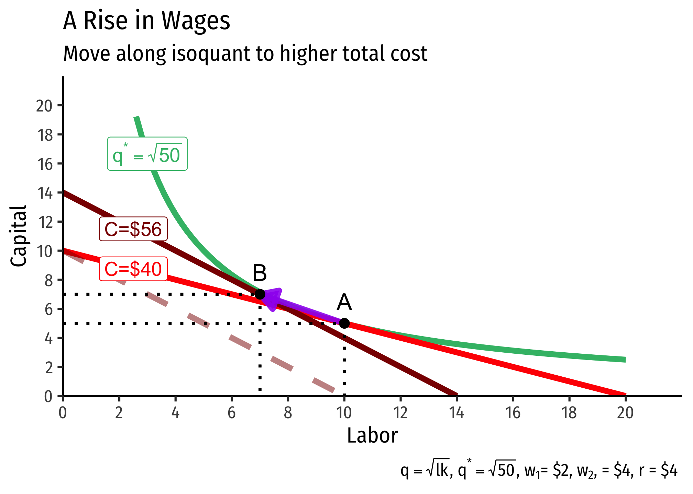
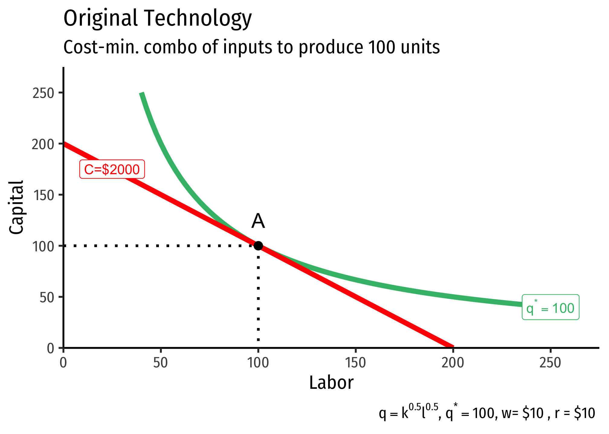
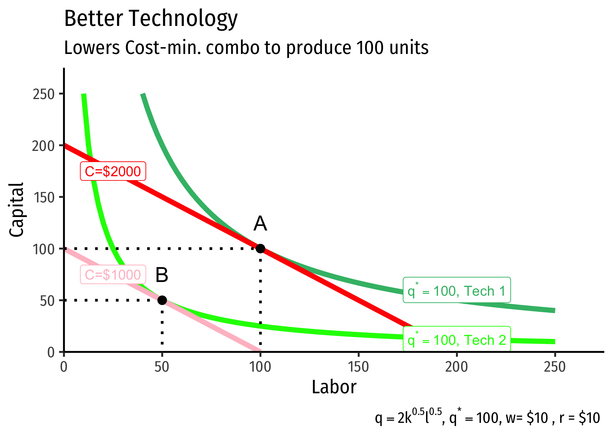

2.3 — Cost Minimization — Appendix
A Change in Relative Factor Prices
If an input (labor or capital) changes in price, we saw that it rotated the isocost line by changing the slope, and the intercept for that input. How does it affect the cost-minimizing (optimal) combination of inputs?
It turns out, a change in one input’s price relative to the other is likely to change the ratio of inputs, as well as the total cost of production due to the mathematics and geometry of cost minimization. Recall the cost-minimizing combination of inputs occurs where the slope of the isoquant is equal to the slope of the lowest isocost line tangent to the isoquant. In the graph below, this occurs at point \(A\).
Then, suppose the price of labor \(w\) increases from $2 to $4. This causes a move along the isoquant from \(A\) to \(B\), the firm substitutes more capital for labor, and this costs more!

Why does the optimal isocost line rotate along both axes (i.e. both axis-endpoints change)? With the budget constraint, we saw a change in one price caused the budget constraint to rotate and change an endpoint only along the axis with the good that changed in price.
Here, recall that the isoquant is unmovable - this is the set optimal quantity we want to produce. If an input were to change in price, that would rotate the isocost line and change only the intercept of that input that changed in price, as with a budget constraint. However, that new line (dashed darker red line) would not be tangent to our original budget constraint anymore - that is, we could not produce the output we want at the same total cost as before. Thus, it must be on a new isocost line (indicating a different total cost), just with the same slope as the new isocost line after the price change.
Note you could also go in the other direction. Begin at point \(B\) and suppose the price of labor decreases (or perhaps the price of capital increases). Then, the firm will substitute more labor for capital, and this will cost less!
Improvements in Technology
We defined our original production function as including an “input” called “total factor productivity.” In our Cobb-Douglas case, we included it in our function as \(A\), as in: \[q=Ak^\alpha l^\beta\]
Now let’s see how this affects production. Suppose the firm wants to produce 100 units of output at a particular set of input prices, with the following technology (represented by the production function): \[q=k^{0.5}l^{0.5}\]

Then the firm’s “technology” improves, such that its new production function is
\[q=2k^{0.5}l^{0.5}\]
Notice total factor productivity \((A)\) has doubled, such that, for the same amount of inputs \(l\) and \(k\), the firm can now produce twice as much output \((2q)\). So suppose again the firm still wishes to produce \(q^*=100\), the same as before. Under the new technology, the firm can produce the same output with fewer inputs. This is the definition of productivity increases or, for an entire economy, economic growth.

Returns to Scale: Proof of Exponents Trick
Consider a Cobb-Douglas production function \[f(k,l) =k^\alpha l^\beta\]
Now scale this function by some scalar \(t>0\), by multiplying both \(l\) and \(k\), and also output \(q\), by \(t\): \[\begin{align*} tq& \lesseqgtr (tk)^\alpha (tl)^\beta \\ tq& \lesseqgtr t^{\alpha+\beta}k^\alpha l^\beta \\ tq& \lesseqgtr t^{\alpha+\beta}f(l,k) \\ \end{align*}\]
This implies that: \[\begin{cases} tq>t^{\alpha+\beta}f(l,k) & \iff \alpha+\beta < 1 & \text{Decreasing returns to scale}\\ tq=t^{\alpha+\beta}f(l,k) & \iff \alpha+\beta = 1 & \text{Constant returns to scale}\\ tq<t^{\alpha+\beta}f(l,k) & \iff \alpha+\beta > 1 & \text{Increasing returns to scale}\\ \end{cases}\]